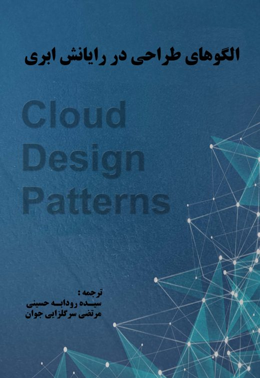

مرجع فارسی مکانیزمهای فناورانه و الگوهای طراحی رایانش ابری؛ شامل مسئله، راهحل، کاربرد و مکانیزمهای هر الگو، همراه با شکلهای بازطراحیشده.

الگوها راهحلهایی رایج برای مسایل معمول را در یک قالب ثابت مستند شده معرفی میکنند و معمولا به عنوان بخشی از یک مجموعه بزرگتر هستند. الگوها قسمتهای بنیادی از زندگی روزانه ما را تشکیل میدهند. ما هر روز بدون اینکه خبر داشته باشیم به طور طبیعی از راهحلهای ثابت برای حل مسایل مشترک استفاده میکنیم. الگوها از جمله مفاهیمی هستند که به طور گستردهای در علم کامپیوتر استفاده میشوند تا به طور خلاصه راهحلهای خوب را برای مسائلی که بصورت مکرر اتفاق میافتند توصیف کنند. وجود الگوهای مفهومی میتواند برای نمونههای واقعی بدون در نظر گرفتن تکنولوژیهای به کار گرفته شده، نظیر نرمافزار، میانافزار و یا زبان برنامه نویسی استفاده شود. الگوها در دنیای فناوری اطلاعات که حول طراحی سیستمهای خودکار در گردش است با نام الگوهای طراحی مشخص میشوند. ویژگیهای پایه الگویهای طراحی به شرح زیر است:
الگوهای طراحی به دلایل زیر سودمند هستند:
جستجو در عنوان و نام انگلیسی؛ برای جستجو در متن کامل از کادر بالای صفحههای مطالعه استفاده کنید.